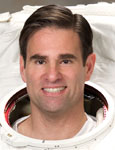

Lyndon B. Johnson Space Center
Houston, Texas 77058
|
National Aeronautics and Space Administration Lyndon B. Johnson Space Center Houston, Texas 77058 |
 |
Biographical Data |
||
Gregory Errol Chamitoff (Ph.D.)
NASA Astronaut (Former)
PERSONAL DATA: Originally from Montreal, Canada. Married to Chantal Caviness, M.D., Ph.D. They have two children, Natasha and Dimitri. His mother, Shari Chamitoff, and brother, Ken Chamitoff, live in Southern California. His father was the late Ashley Chamitoff. His recreational interests include scuba diving, backpacking, flying, skiing, Aikido, magic, guitar and chess. Dr. Chamitoff is a certified divemaster and instrument-rated pilot.
EDUCATION: Blackford High School, San Jose, California, 1980.
Bachelor of Science in Electrical Engineering, California Polytechnic State University, 1984.
Master of Science in Aeronautical Engineering, California Institute of Technology, 1985.
Doctorate in Aeronautics and Astronautics, Massachusetts Institute of Technology, 1992.
Master of Science in Space Science (Planetary Geology), University of Houston-Clear Lake, 2002.
SPECIAL HONORS: NASA Distinguished Service Medal; NASA Space Flight Medals; California Astronaut Hall of Fame; Cal Poly Honored Alumni Award; AIAA Associate Fellow; AIAA Technical Excellence Award; NASA Silver Snoopy Award; NASA/USA Space Flight Awareness Award; C.S. Draper Laboratory Graduate Fellowship; IEEE Graduate Fellowship; Tau Beta Pi Honor Society Fellowship; Phi Kappa Phi Honor Society; Eta Kappa Nu Honor Society; Applied Magnetics Scholarships; Academic Excellence Award; Most Outstanding Senior Award; Degree of Excellence and California Statewide Speech Finalist; Eagle Scout.
EXPERIENCE: As an undergraduate student at Cal Poly, Dr. Chamitoff taught lab courses in circuit design and worked summer internships at Four Phase Systems, Atari Computers, Northern Telecom and IBM. He developed a self-guided robot for his undergraduate thesis project. While at MIT and Draper Labs (1985 to 1992), Dr. Chamitoff worked on several NASA projects. He performed stability analysis for the deployment of the Hubble Space Telescope, designed flight control upgrades for the Space Shuttle autopilot and developed attitude control system software for the Space Station. In his doctoral thesis, he developed a new approach for robust intelligent flight control of hypersonic vehicles. From 1993 to 1995, Dr. Chamitoff was a visiting professor at the University of Sydney, Australia, where he led a research group in the development of autonomous flight vehicles and taught courses in flight dynamics and control. He has published numerous papers on aircraft and spacecraft guidance and control, trajectory optimization and Mars mission design.
NASA EXPERIENCE: In 1995, Dr. Chamitoff joined Mission Operations at the Johnson Space Center, where worked as a Guidance and Control Flight Controller. He led the development of software applications for spacecraft attitude control monitoring, prediction, analysis, and maneuver optimization. One of these applications is the 3-D “big screen” display of the International Space Station and space shuttle used by Mission Control.
Selected by NASA as an Astronaut Candidate in 1998, Dr. Chamitoff has worked on International Space Station Robotics, served as lead Capsule Communicator (CAPCOM) for Expedition 9, supported the training of Expedition 6 as a crew support astronaut and helped to develop procedures and displays for station operations. In 2002, Dr. Chamitoff was a crewmember on the NEEMO-3 Mission (NASA Extreme Environment Mission Operations), living and working on the Aquarius undersea research habitat for 9 days. In September 2013, he left NASA to join the faculty of Texas A&M University as a Professor of Engineering Practice in the Aerospace Engineering Department. He also joined the faculty at the University of Sydney, Australia, as the Lawrence Hargrave Chair Professor in the Department of Aerospace, Mechanical and Mechatronic Engineering.
SPACE FLIGHT EXPERIENCE: Expedition 17/18 - In 2008, Dr. Chamitoff served as the flight engineer and science officer for a 6-month mission aboard the International Space Station during Expeditions 17 and 18. He launched to the station on shuttle mission STS-124 and returned to Earth on shuttle mission STS-126.
STS-134 (May 16 to June 1, 2011) - Dr. Chamitoff served as a Mission Specialist on the 25th and final flight of Space Shuttle Endeavour, STS 134. During this mission, he performed operations with the shuttle and International Space Station Robotic Arms, including the installation of a pallet of spare equipment (ELC 3) and a particle physics observatory called the Alpha Magnetic Spectrometer (AMS), which holds great promise for fundamental breakthroughs in our understanding of the Universe. He also performed two spacewalks, the last of which marked the completion of station assembly and was the final spacewalk of the Space Shuttle Program.
During his career, Dr. Chamitoff logged more than 198 days in space.
OCTOBER 2013
This is the only version available from NASA. Updates must be sought from the above named individual.